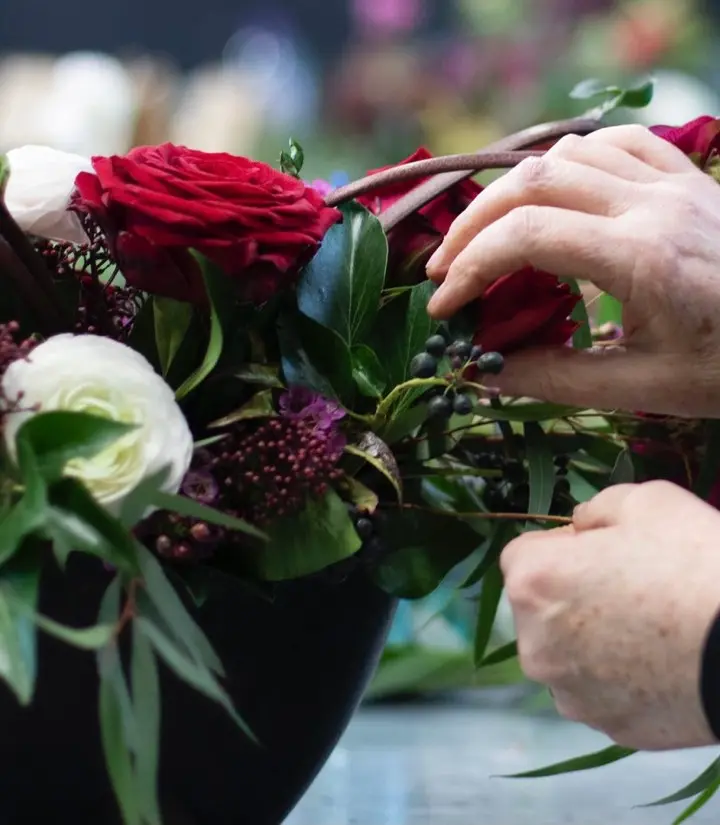
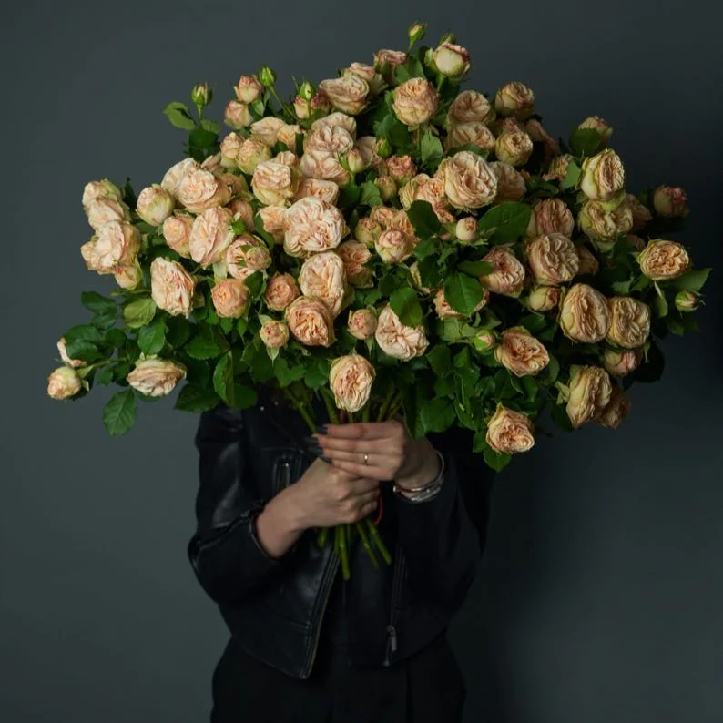
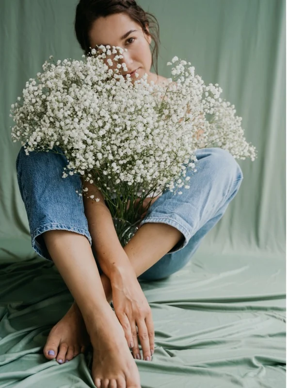
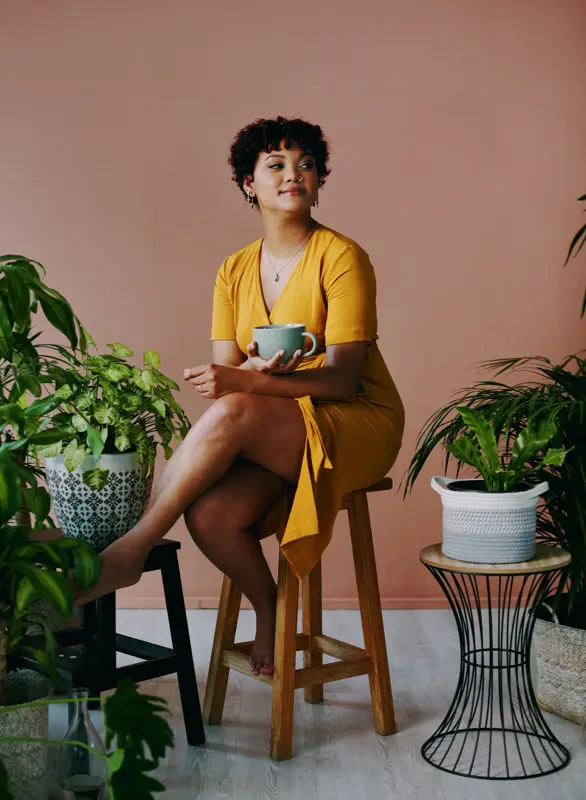
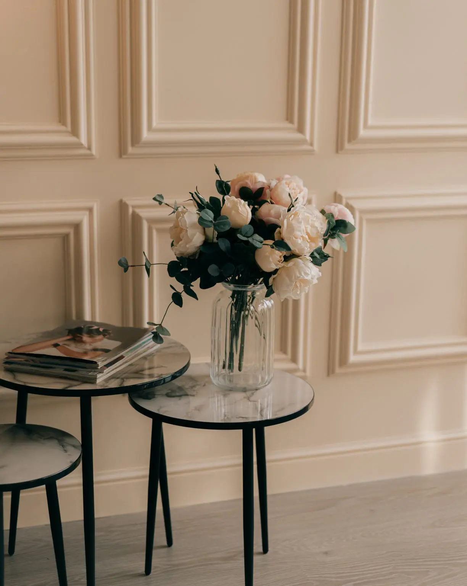

PLANTS
PLANTS
Celebrating Diversity and pride
May – a month which welcomes an abundance of flowers, but there is one stem whose return truly sets hearts aflutter.

FLOWERSThis year, in recognition of International Pride month, we've invited our team to share what Pride means to them.
PLANTS
May – a month which welcomes an abundance of flowers, but there is one stem whose return truly sets hearts aflutter.
 PLANTS
PLANTS
Whether it's the hue of a precious gem or a stem that reminds them of a special time or place – our florists take inspiration from a plethora of sources.

PLANTSFor those of you hosting this Christmas, read on for our tips on the perfect finishing touches.
.webp) PLANTS
PLANTS
With Father's Day just around the corner, it's not too late to pick the perfect gift to say thank you.
.webp) FLOWERS
FLOWERS
British Flowers Week is coming up soon. Our florists share their favourite seasonal blooms.
.webp) FLOWERS
FLOWERS
Colleen and Simon were wed in late May of this year with an intimate ceremony.

FLOWERSIt's no secret how much florists adore this time of year, as a wealth of gorgeous summer flowers emerge.

PLANTSWhether it's the hue of a precious gem or a stem that reminds them of a special time or place.

FLOWERSThere are a multitude of reasons why roses remain universally celebrated floral symbols.